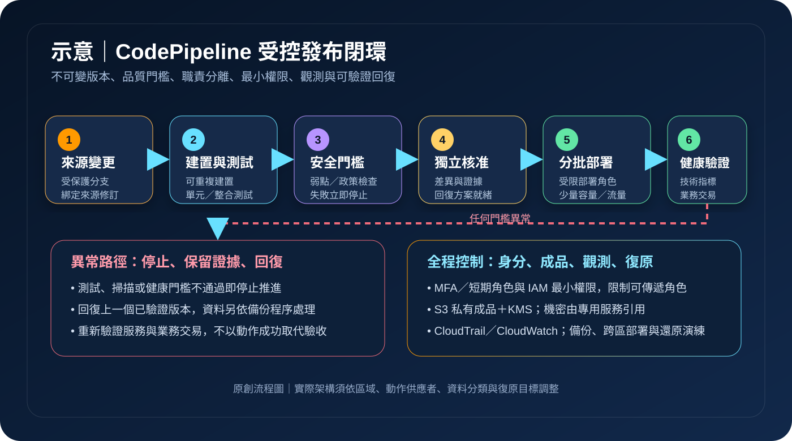

AWS CodePipeline：持續交付與受控發布
AWS CodePipeline 將來源、建置、測試、核准與部署串成可視化工作流程，讓軟體變更能重複執行並留下狀態紀錄。它負責協調交付步驟，但不會自動保證程式碼安全、測試充分或部署後服務可正常復原。
作者：Dr. William｜查閱與發布：2026-09-17
服務定位
AWS CodePipeline 是持續交付服務，用來建模、顯示與自動化軟體發布所需步驟。一次來源變更可啟動管線執行，依序經過建置、測試、人工核准與部署；各動作可串接 AWS 服務或支援的第三方供應者。
CodePipeline 是工作流程協調層，不是原始碼儲存庫、建置執行環境、弱點掃描器或部署目標本身。管線顯示成功，只代表設定的動作成功完成；若測試、政策檢查、健康驗證或回復條件沒有被納入，成功狀態不能證明版本安全或可用。
核心概念與適用邊界
主要元件
- 管線與階段：管線描述完整發布流程；階段把來源、建置、測試與部署等環境或責任邊界分開。
- 動作：來源、建置、測試、部署、核准與叫用等操作，可依 runOrder 串行或平行執行。
- 成品：動作透過 S3 成品儲存區傳遞原始碼封裝、建置輸出或部署描述，應限制存取並加密。
- 觸發與來源修訂：儲存庫事件、標籤、分支或手動啟動可建立一次具識別碼的執行，並綁定特定來源版本。
- 執行模式：依工作負載選擇 SUPERSEDED、QUEUED 或 PARALLEL，決定新舊執行競爭時的處理方式。
- 條件與核准：階段條件可執行規則，人工核准則在高風險環境前建立明確決策點。
邊界與依賴
- 每個階段一次只能由一個執行占用；停用轉換、被取代與平行模式的行為需在正式使用前測試。
- CodePipeline 不負責產生高品質測試；建置、掃描與驗證需由 CodeBuild、測試工具或自訂動作執行。
- 人工核准能阻擋流程，但不能取代變更內容、風險、職責分離與核准時效的制度設計。
- 跨帳號或跨區部署需額外設定角色、成品儲存區、KMS 金鑰與信任關係，故障面也隨之擴大。
- 管線可重試或回復階段，但資料庫結構、資料內容與外部系統的一致性仍需專屬回復方案。
適合與不適合的使用情境
適合
- 需要把每次程式碼變更固定經過建置、單元測試、安全檢查、核准、部署與部署後驗證。
- 需要在開發、測試與正式帳號間建立可追溯的交付路徑，並限制誰能核准或修改管線。
- 需要部署至 ECS、Lambda、CloudFormation、EC2 或其他受支援目標，並統一收集執行狀態。
- 需要藍綠、分批或多階段發布，遇到健康指標異常時停止推進並啟動回復程序。
不適合或不能單獨完成
- 流程只有偶發、不可重複且沒有稽核價值的一次性操作，建立完整管線可能增加不必要維運負擔。
- 需要複雜動態工作流、長時間人工協作或大量資料處理時，應評估 Step Functions、事件服務或專用編排工具。
- 尚未建立版本控制、可重複建置、自動測試與環境隔離時，管線只會更快傳遞未受控變更。
- 需要保證零中斷或資料相容性時，仍需由部署策略、容量、資料移轉與應用層驗證共同完成。
示意故事案例：預約平台的分階段安全發布
以下為示意案例，不代表特定組織或正式部署。 一個預約平台將應用程式保存在版本控制系統。合併至受保護分支後，CodePipeline 綁定來源修訂，讓 CodeBuild 執行單元測試、相依套件與映像掃描，再以 CloudFormation 變更集預覽基礎設施異動。任何測試或政策檢查失敗，流程立即停止。
測試帳號部署成功後，團隊以合成交易確認登入與預約功能；正式階段需由未參與提交的人員核准。部署角色只允許更新指定服務，成品儲存區採 KMS 加密且禁止公開存取，應用機密由 Secrets Manager 在執行期提供。正式部署先導向少量流量，CloudWatch 錯誤率超過門檻時停止推進並回復上一個已驗證版本；CloudTrail 與管線事件集中保存供追查。

建置與運作流程
- 界定發布單位：明確定義來源分支、成品版本、目標環境、擁有者、變更風險與可接受中斷。
- 隔離環境與身分：分開開發、測試與正式帳號；人員透過聯合登入、MFA 與短期角色操作。
- 建立成品邊界：使用專用 S3 儲存區、KMS 加密、版本控制、私有存取與生命週期政策，限制管線角色可讀寫範圍。
- 定義階段與動作：依序建立來源、可重複建置、單元與整合測試、安全掃描、核准、部署及部署後驗證。
- 設定最小權限角色：管線服務角色只可啟動指定動作；各建置與部署角色分離，並限制 iam:PassRole 的目標。
- 選擇執行模式：依發布順序與併發需求評估 SUPERSEDED、QUEUED 或 PARALLEL，測試重複觸發與停用轉換的結果。
- 加入正式環境門檻：要求獨立核准者檢查來源版本、測試證據、變更集、維護時段、回復版本與資料相容性。
- 採漸進式部署：先對小部分容量或流量發布，觀測錯誤率、延遲與業務指標，再決定繼續或回復。
- 集中記錄與告警：以 CloudTrail 保存管線及角色操作，用 EventBridge 與 CloudWatch 對失敗、取消、長時間等待及異常修改告警。
- 演練中止與復原：定期驗證停止執行、回復應用、還原資料與跨區重建；以實測結果更新 RTO、RPO 與程序。
成本、可用性與維運考量
CodePipeline 依管線類型與使用量計價，規則可能隨區域及服務版本調整；建置時間、測試環境、S3 成品、KMS、CloudWatch、跨區複製、資料傳輸與實際部署資源另行計費。應依官方價格頁與帳務資料估算，並清理停用管線、舊成品與短期測試環境。
管線與其資源具有區域性。正式工作負載即使跨多可用區，交付控制面仍需規劃區域故障時的操作方式。跨區部署必須為每個區域準備成品儲存區與 KMS 金鑰，確認動作供應者、配額、映像、部署角色及相依服務皆可用。
高可用發布不等於高可用應用。發布期間要維持足夠容量，避免同時移除所有健康執行個體；資料庫變更宜採向前與向後相容步驟。回復版本、備份與跨區副本都要實際還原，不能只依管線狀態判定服務已恢復。
CodePipeline 特有資安風險與控制
- 服務角色成為跨服務跳板：管線可叫用建置與部署服務；依動作拆分角色與資源範圍，限制可傳遞角色，並以權限邊界與 SCP 控制上限。
- 來源事件遭偽造或分支設定過寬：限制觸發分支與標籤，保護主要分支，要求簽核與狀態檢查，部署前再次核對來源修訂。
- 成品被替換或外洩：S3 儲存區禁止公開存取，限制來源與目的動作角色，使用 KMS 加密、版本控制及完整性驗證，監看政策異動。
- 敏感值進入動作設定或日誌：以 Secrets Manager 或 Parameter Store 安全字串引用，限制解密範圍；不得寫入管線變數預設值、範本、建置輸出、成品或日誌。
- 第三方動作與連線供應鏈：確認供應者、授權範圍與資料流向，移除不再使用的連線，限制出站網路並監看異常叫用。
- 人工核准流於形式：核准通知須包含不可變版本、測試與掃描證據、部署差異及回復計畫；核准者與提交者職責分離並設定逾時。
- 平行或被取代執行造成版本競爭：依環境選擇執行模式，序列化資料庫變更，使用部署鎖與版本檢查，避免舊版本覆蓋新版本。
- 跨帳號信任過寬：部署帳號只信任指定來源角色，加入外部條件與資源限制；正式帳號不得反向取得開發帳號廣泛權限。
- 偵測與復原證據不足：集中保存 CloudTrail 與管線事件，以 CloudWatch 告警監看失敗及未授權修改；AWS Backup 或服務原生備份需含跨區副本與還原演練。
共同責任邊界
AWS 負責 CodePipeline 受管服務與底層雲端基礎設施的安全，並提供管線、階段、動作協調、執行狀態及服務整合能力。客戶負責來源可信度、管線定義、測試內容、角色與信任政策、成品保護、核准制度、部署策略、監控及回復驗證。
客戶仍須落實 IAM 最小權限、人員 MFA 與短期憑證、帳號與網路隔離、公開存取控制、KMS 加密、Secrets Manager／Parameter Store 機密管理、CloudTrail／CloudWatch 觀測，以及備份與跨區復原。AWS 不會替客戶判斷某次變更是否符合資料分類、法規、可用性目標或業務風險。
上線前可執行檢查清單
- □ 來源分支受保護，觸發條件、來源修訂與成品版本可追溯且不可混淆。
- □ 管線、建置與部署角色已分離並符合 IAM 最小權限；可傳遞角色與跨帳號信任受到限制。
- □ 管理與核准人員使用聯合登入、MFA 與短期角色，提交者不能單獨核准自己的正式變更。
- □ S3 成品儲存區禁止公開存取，採 KMS 加密、版本控制、私有政策與適當保存期限。
- □ 建置與測試環境位於必要的網路邊界，出站連線、套件來源及第三方動作已有白名單與監控。
- □ 應用機密來自 Secrets Manager 或 Parameter Store；管線設定、變數、成品與日誌不含有效敏感驗證資料。
- □ 單元、整合、安全與政策檢查具有明確失敗門檻，失敗不能被忽略或直接跳過。
- □ 正式核准可看到不可變版本、差異、測試證據、風險、維護時段與可執行回復方案。
- □ 執行模式與並行行為已測試，資料庫變更不會因版本競爭而重複或逆序執行。
- □ CloudTrail 集中保存控制面活動；CloudWatch／EventBridge 對失敗、取消、逾時與管線修改告警。
- □ 漸進式部署有健康門檻、停止條件與自動或人工回復路徑，部署後執行業務層驗證。
- □ 備份、跨區副本及備援區域部署已實際演練，RTO／RPO 由量測結果支持。
- □ 已依管線、建置、測試資源、成品、記錄、KMS、跨區複製與資料傳輸估算並監看成本。
AWS 官方一手來源
- AWS CodePipeline User Guide｜What is AWS CodePipeline?（查閱：2026-09-17）
- CodePipeline concepts（查閱：2026-09-17）
- What type of pipeline is right for me?（查閱：2026-09-17）
- Identity and access management for CodePipeline（查閱：2026-09-17）
- Security best practices for CodePipeline（查閱：2026-09-17）
- Configure server-side encryption for artifacts（查閱：2026-09-17）
- AWS CodePipeline pricing（查閱：2026-09-17）
- AWS Well-Architected Security Pillar｜Shared responsibility（查閱：2026-09-17）
內容說明
本文依查閱日可用的 AWS 官方文件整理，作為基礎學習與架構討論材料；實際部署仍須依最新功能、區域支援、價格、配額、組織政策、資料分類、法規及復原演練結果調整。